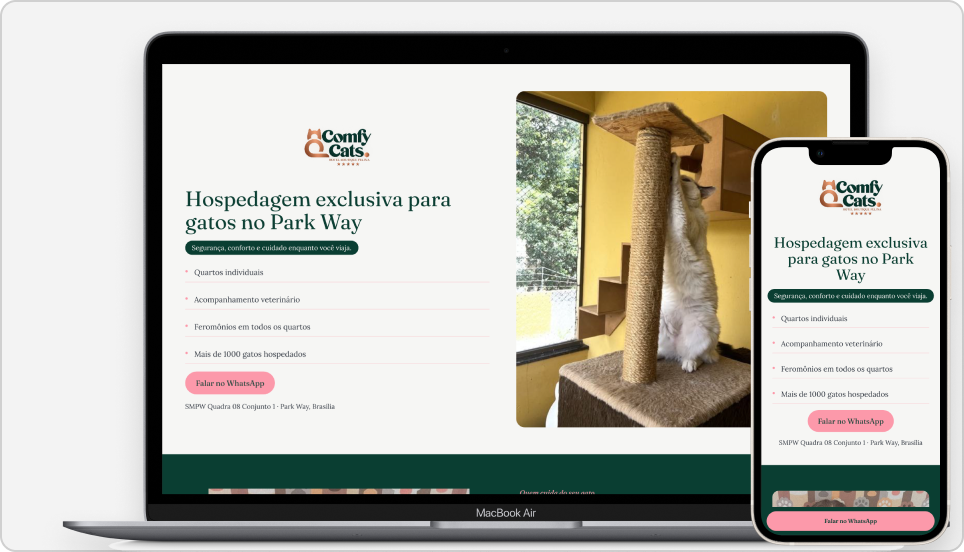
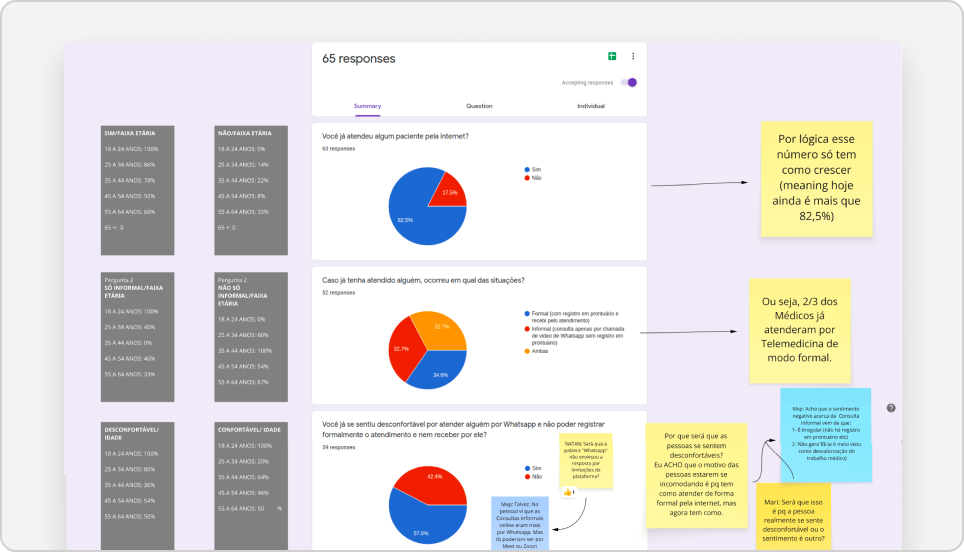
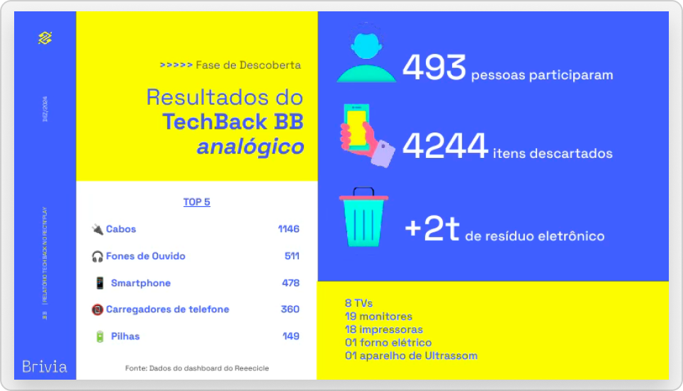
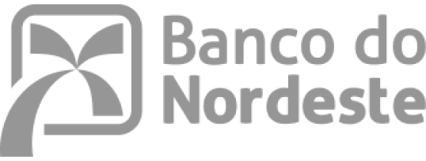
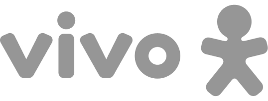
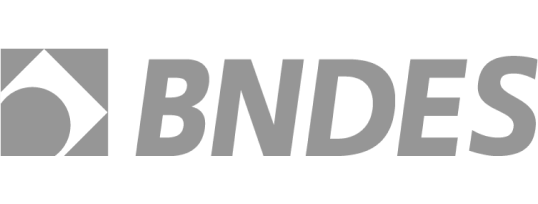

PORTFÓLIO · PRODUCT DESIGN E UX RESEARCH
Mariana Meirelles
Product Designer Sênior e UX Researcher
Mais de 10 anos em produtos digitais de alta complexidade, em serviços financeiros e no setor público.
Brasília, DF · remoto
Cases

CASE 1 · COMFY CATS HOTEL · 2026
Redesign de uma landing page com IA
Do diagnóstico à produção em 1,5 dia de trabalho
1,5 diaTempo de trabalho com IA, do diagnóstico à publicação
Ver case
CASE 2 · BANCO DO BRASIL · 2020
Design Estratégico em Escala Nacional
Como o UX Writing garantiu a estabilidade do Pix no BB
100%Estabilidade com zero queda de servidores no dia da inauguração
Ver case
CASE 3 · BANCO DO BRASIL · 2019
Design Estratégico em Fintech
Como a Concepção da Carteira Digital do BB Conectou Negócios e Engenharia
5 fluxosCríticos, desenhados no Discovery e lançados nas lojas
Ver case
CASE 4 · CERTIFICAMED · 2020-2021
Liderança em Healthtech
Como uma pesquisa em telemedicina revelou que a credibilidade é parte do produto
82,5%Médicos respondentes já atenderam algum paciente pela internet
Ver case
CASE 5 · TECHBACK BB (BANCO DO BRASIL) · 2024
Pesquisa de Guerrilha em Sustentabilidade
Como entrevistas a céu aberto no Rec'n'Play mostraram que o descarte de lixo eletrônico precisava de uma jornada autônoma
3 diasDe observação e entrevistas no Rec'n'Play
Ver case
CASE 6 · GLASU! (BASF/SUVINIL) · 2021
Estratégia, Gestão e Entrega
Lançamento de uma Nova Marca de Varejo em 3 meses
100%Aderência ao TTM
Ver caseSobre mim
- Gosto de entender o problema antes de desenhar a tela
- Uso pesquisa para decidir o que construir
- Meu background em front-end facilita o diálogo com a engenharia
- Aplico IA generativa com critério, da pesquisa ao protótipo
Impacto em números
Trajetória
- 2016SEA TecnologiaUX/UI Designer
- 2019StefaniniProduct Designer Sr.
- 2021GaugeDesign Manager
- 2023CotricDesign Strategy
- 2024BriviaLíder de Experience Design
- 2025Petry DesignConsultora de Design
Alguns clientes com quem já trabalhei








Como eu trabalho
Metodologia: Double Diamond
Do problema à necessidade e da necessidade à solução, divergindo e convergindo em cada etapa. É a base do Design Thinking que aplico em todos os projetos.
A metodologia na prática
Descobrir
Kick-off, desk research, entrevistas com stakeholders e benchmark. No Pix, a regulação do Bacen virou mapa de riscos.
Definir
Personas, inventário de conteúdo, arquitetura de informação e sitemap. Na Carteira bB, quatro personas oficiais alinharam o time.
Projetar
Workshops de cocriação, fluxos to-be, wireframes e protótipos navegáveis, validados com Negócio, TI e Segurança.
Entregar
UI de alta fidelidade, testes de usabilidade com SUS, auditoria de conteúdo e handoff acompanhado com a engenharia.
Princípios de trabalho
Problema antes da tela
Estruturo o contexto e comparo alternativas antes de desenhar.
Decisões com dados
Métricas, pesquisas e testes rápidos quando falta dado.
Design System com estratégia
Evoluo componentes e padrões em vez de criar exceções.
Perto da engenharia
O meu background em front-end facilita o diálogo e o handoff.
Algumas ferramentas
| Área | Ferramentas |
|---|---|
| Design e protótipo | Figma, Axure, Marvel |
| Pesquisa e cocriação | Lookback, Miro, Hotjar, Dovetail |
| Dados | Mixpanel, Google Analytics |
| IA generativa | Claude, ChatGPT, Gemini, NotebookLM |
| Front-end | HTML, CSS, JS, React |